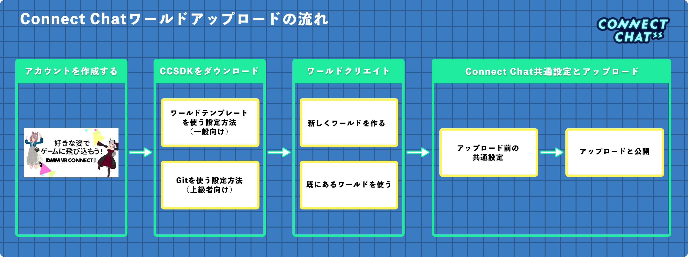

はじめに/目次
ここでは、チュートリアル形式でConnect Chatにワールドをアップロードする方法を解説します。
Connect Chatのワールドアップロードはとてもシンプルで、既存のワールドシーンをアップロードすることもできるためチャレンジをしてみましょう！
Connect Chatワールドアップロードの流れ

チュートリアルもくじ
アカウントの作成
Connect ChatではDMM VR Connectのアカウントを使用してワールドを管理するため、アカウント作成がまだの方は下記URLよりアカウント作成を行いましょう。
また、DMM VR Connectに登録した好きなVRMアバターの姿でConnect Chatを遊ぶことができます。
DMM VR Connect : https://connect.vrlab.dmm.com/
CCSDKをダウンロードしてUnityにインポート
CCSDK（Connect ChatカスタムワールドSDK）の導入方法は一般向けと上級者向けの２つの方法が用意されています。 それぞれ詳しく解説をしますので、選びたい方法をクリックして先へ進んでください。
:warning: Connect ChatはUnity 2019.4.29を使用しています。 新しくワールドを作成する場合は、必ず上記のバージョンのUnityを用意しましょう。
Unityの対応するバージョンのインストール方法は
こちら
で詳細の解説を行っています。